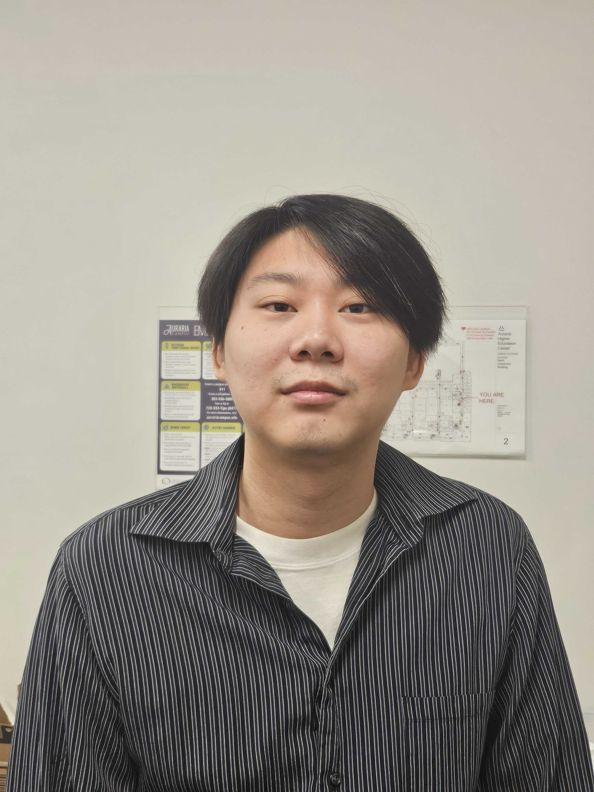
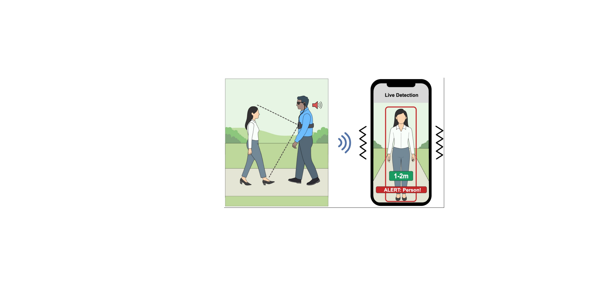
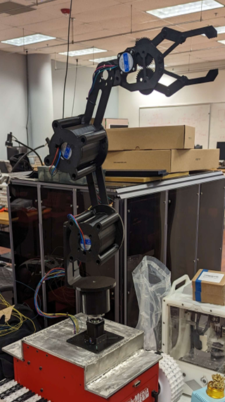
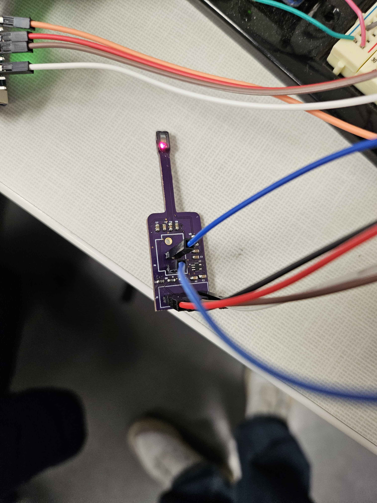

Graduate researcher at CU Denver focused on deep learning, embedded systems, and sensor control — building real systems that run at the edge.

I'm an Electrical Engineer based in Denver, Colorado, working at the intersection of hardware design and machine learning.
My research focuses on deploying AI on resource-constrained edge devices — autonomous robots that sort waste, wearables that help visually impaired users navigate, and ear-worn sensors that monitor blood pressure continuously. I love the moment when a transformer model quantizes down to 8-bit on an unsupported architecture.
Currently completing my MS in Electrical Engineering at CU Denver, with publications at ACM MobiSys. Always curious about how AI, robotics, and medical systems can come together to make life better.



Open to research collaborations, internships, and conversations about AI, robotics, and embedded systems. The fastest way to reach me is email.